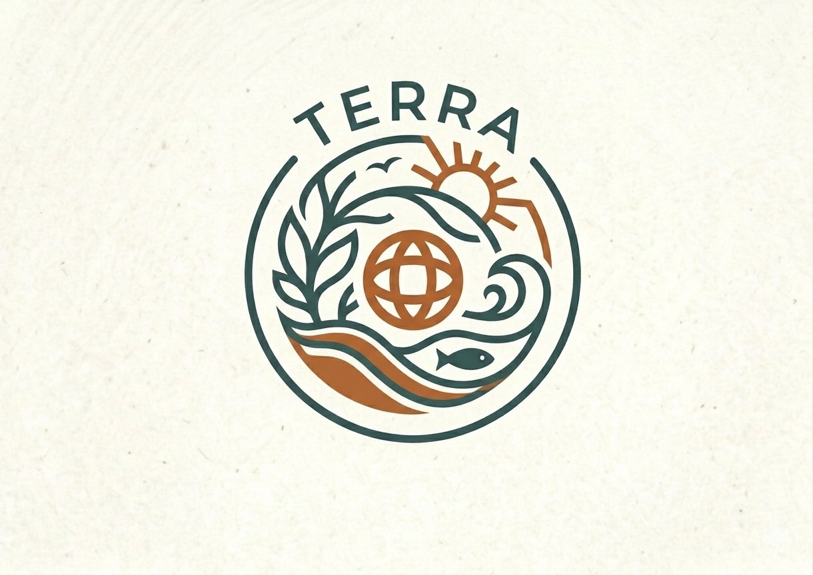
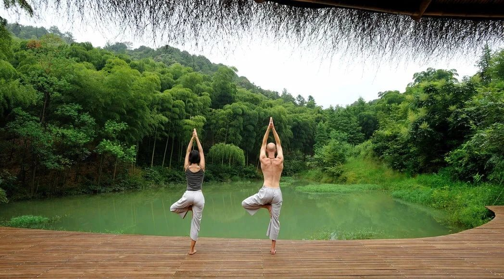
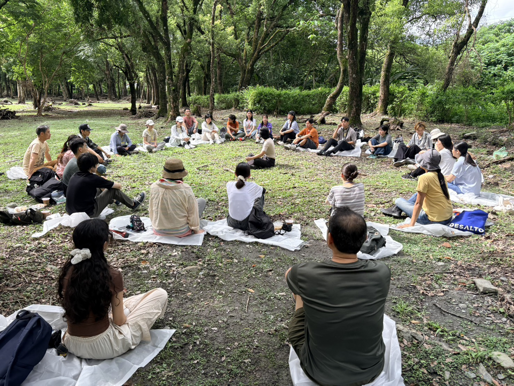
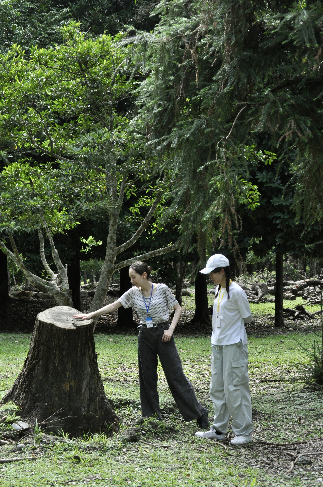
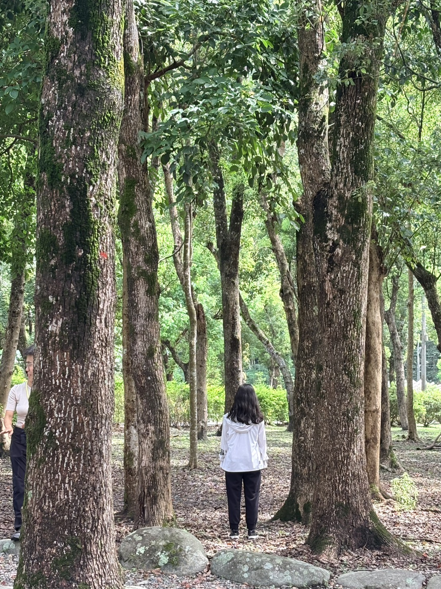
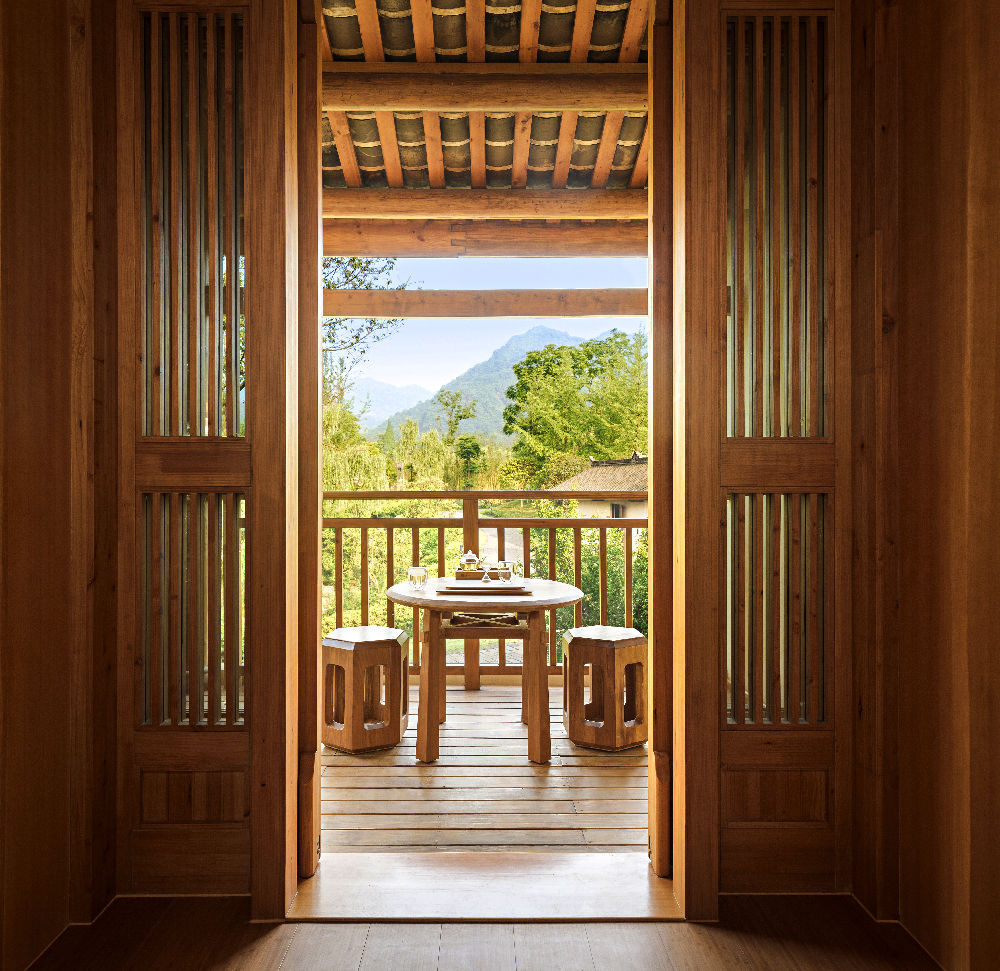
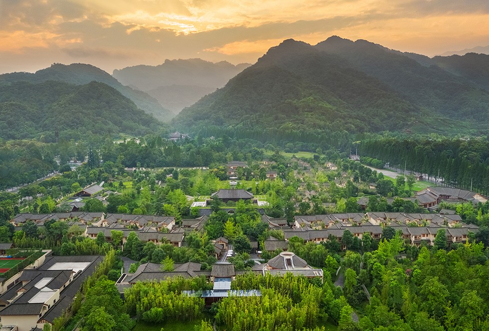

企業家與高階管理者
在承擔責任與持續決策之余，為自己留出安靜思考的時間，重新梳理生活的輕重緩急。

泰拉學校－仁人校自然體驗・內在覺察・健康解密
仁人校以自然體驗、內在覺察與健康解密為三大核心，結合五感練習、內在權威連接與日常健康保健議題，在山林、湖畔、海邊的自然場域開展成人旅居課程。我們提供師資與課程內容，與場域方或開課方共同落地。
身體狀態、情緒與想法彼此關聯。透過內在覺察，探索情緒背後的觸發因素、慣性想法與核心需要，練習轉念及情緒調節，逐步建立更穩定的心情與日常自我照顧，支持身心健康。身體健康同時受到生活習慣、環境及生理因素等影響。
在承擔責任與持續決策之余，為自己留出安靜思考的時間，重新梳理生活的輕重緩急。
從豐富的生活體驗走向更細膩的自我認識，探索身心狀態、關係與個人價值。
面對身份與生活節奏的變化，探索新階段的意義、興趣與日常實踐。
讓自然成為課堂
以緩步走讀、林間停留、觸覺探索與安靜觀察，重新感受環境的細節，也覺察身體當下的回應。
把注意力帶回自己
透過靜心、身體覺察與傾聽對話，連接內在權威：聆聽自身的感受、需要與價值，探索情緒背後的觸發因素與慣性想法，練習轉念及情緒調節。
從身體認識走向日常照顧
探索身心關係與健康維護，討論能量、頻率及共振的課程觀點與證據限制，並將學習落實於日常保健與自我照顧。

看見光影與層次，聆聽風聲與鳥鳴，聞見草木氣息，觸摸樹木紋理，以茶或當季食物練習細嘗。
以“人體是精密的多維能量體”為身心探索觀點，討論“DNA中的頻率密碼”“信息頻率與器官閘門共振”等概念。
透過呼吸觀察、靜坐與書寫連接內在權威，練習聆聽自己的感受、需要及價值。從身體感受與當下情緒出發，探索觸發情緒的事件、慣性解釋及核心需要，嘗試新的理解與回應，支持情緒穩定與自我照顧。
以“發生了什麼—我如何理解—我真正需要什麼—還能怎樣回應”為練習路徑，形成個人轉念記錄；分享以自願為原則。
透過引導提問與小組對話，回顧重要經歷，思考關係、貢獻及人生下一階段的方向。


健康主題以生活教育與自我照顧為範圍；不作診斷或療效承諾，不替代醫療照護。課程可依參與者狀態調整，分享與練習均尊重個人選擇。
建議以 12–18 人的小團體試辦，保留充分的引導、獨處與交流時間。以下為建議安排，日期、人數及講師尚待雙方確認。
下午：抵達與開場，說明活動節奏及個人邊界；自然走讀與五感初體驗。
晚上：安靜書寫與傾聽交流，記錄此刻最想照顧的自己。
上午：身體覺察、林間靜坐、樹木觸覺體驗；依體力安排步行及休息。
下午：內在權威連接與情緒轉念、健康解密主題；晚上：生命價值對話與自由靜處。
上午：自然獨處與體驗整理；以自願分享完成課程。
午後：離場。建議兩周後線上回訪，交流日常實踐情況。


適合林間停留、慢行與自然觀察；優先考慮可達性、平緩路線及休息空間。
適合聆聽、遠眺與開放空間中的靜心；課程時段依風雨、日照及現場條件調整。
提供舒適住宿、安靜教室、餐飲與服務，形成室內外銜接的完整旅居體驗。
選址共同條件：自然步行可達、活動空間安靜、住宿舒適，並具備天氣變化時的室內替代空間。高山場域需結合參與者體力與交通條件評估。
四川 · 青城山六善 ↗ 山林與康養體驗
浙江 · 安吉悅榕莊 ↗ 山林湖畔度假場域
以上僅為場域類型與體驗方向參考，尚無合作關係或場地預訂。度假村照片為場域氛圍參考；課程照片來自泰拉學校的活動紀錄。
| 工作範圍 | 建議負責方 | 具體內容 |
|---|---|---|
| 課程與帶領 | 仁人校 | 課程設計、講師配置、體驗引導、學習材料與課程檢討。 |
| 場域與接待 | 場域合作方 | 住宿餐飲、活動空間、現場路線、室內備選空間與接待服務。 |
| 招生與運營 | 開課方／雙方約定 | 客群邀約、報名收款、行前溝通、交通安排與現場協調。 |
| 共同確認 | 各合作方 | 課程規模、對外文案、價格與結算、取消規則、參與者隱私及現場應變分工。 |
開課方支付約定的課程與師資費用；仁人校依確認範圍交付，食宿與招生由合作方統籌。
共同設計課程旅居方案，先確認各項成本、最低開班條件與結算方式，再協商收益分配。
預算按師資與備課、差旅、住宿餐飲、場地、活動材料及運營成本分別覈算。報價、分成、最低開班人數及取消條款待合作洽談確定。
更清楚地理解身體感受、情緒與想法的關聯，探索內在需要，練習轉念及情緒調節，將五感練習與自我照顧融入日常，支持身心健康。
形成一套結合在地自然、住宿服務與內在探索的課程方案，驗證客群興趣與後續開課可能。
累積適合高端成人的課程回饋，優化講師、流程與場域搭配，建立可持續的合作方式。
建議以結課回饋與兩周後回訪，瞭解體驗感受及實踐情況；合作方同步檢討報名、實際參與、成本與再次開課意願。上述為預期方向，並非已取得的成果。
確認合作對象與客群 → 勘察場域與配置講師 → 確定方案及預算 → 招生與行前溝通 → 試辦及檢討
首輪洽談重點：城市與場域、目標客群、可用檔期、招生責任、預算範圍，以及講師名單與專業簡介。
下載簡體 PDF 提案 ↗